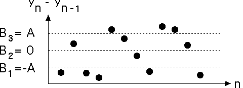

| While there is no reason to think 0 holds any special importance for the data set |
| it may for the first differences |
| For instance, a positive first difference means the data values are increasing, a negative first difference means the data values are decreasing. This has clear significance for financial data. |
| Take B2 = 0, and in the absence of other information, take B1 and B3 symmetrically spaced about B2 = 0. |
| Usually express B1 and B3 as a fraction of the range of the differences. |
|  |
Return to Coarse-Graining.